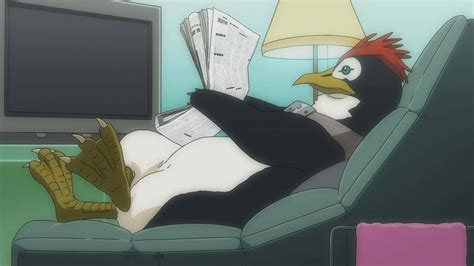

Neon Genesis Evangelion
Genres
Neon Genesis Evangelion (abrévié en Evangelion) tombe sous les catégories suivantes :
Science-fiction,
Post-apocaliptique,
Psycologique,
Mecha*
Le Mecha est un genre d'animé et de manga qui contien des méchas au combat.
Source: Wikipedia
Résumé
Il se rends donc au qg de la NERV (l'organisation chargée de protéger la terre contre les anges) quand le premier ange de l'anime frappe. La NERV envoi donc Shinji dans son nouveau robot au combat mais il ne sait pas le piloter donc il se fait djoufrarah.
Public: adoléscents
Personage donnant envie de suivre l'histoire
Dans Evangelion tous les personnages donnent envie de suivre l'histoire mais un ressort en particulier :
Pen Pen

Pen pen est un pinguin servant d'animal de companie a la persone qui eberge Shinji: Misato Katsuragi.
Il vit dans un compartiment du frigo.
Il donne envie de regarder le prochain épisode juste pour savoir si il est présent.
Les Conflits
L'histoire peut etre dvisée en deux conflits distinct :
Les humains vs les anges
et la NERV contre son organisation parente : la SEELE
Ce qui donne envie de regarder le prochain épisode
Deux choses principales donnent envie de regarder l'épisode suivant :
La raison pricipale étant :
PEN PEN
et la seconde étant le nombres de quéstions que l'animé nous force a poser.
Pour en citer q'une la premiere question que je me suis posé était "c'est quoi une Eva ?"